いよいよオリンピックの開幕直前。話題には事欠かないが、プロ野球選手で固めたドリームチームもその一つ。ほいじゃあ、麻雀オリンピックがあったとしたら、日本代表にはどのプレーヤーがふさわしいか。そこで麻雀のドリームチームを編成してみた。といってもプレーヤーは現実の人間ではない。みんなコミックの主人公。
コミックの主人公は、いずれも雀豪、雀鬼がそろってる。人材が豊富すぎて、選択に大いに迷った。しかしオリンピックでは４人１チームの団体戦。４人の総合成績が、チームの成績となる。そこで技巧派の理想雀士ドトッパーや哭きの竜より、相手を完膚無きまでたたきのめす、あるいはぶっちぎりの打点力があるプレーヤーが望ましい。
そこで最終的に選抜したのが、下記の４人。まず１番手めは、ゴルゴダタワーで、驚異の378京３千23兆6869億点をたたき出した青い☆（青山広美）。２番手は、東の１局から問答無用の大物手を連発する根こそぎフランケン（押川雲太郎）。
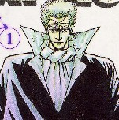 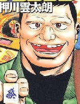
３番手は、相手を廃人にで追い込むまでたたきつぶす傀（かい）（天獅子悦也）。４番手は、クールで恰好いい白（渋沢さつき）。
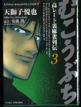 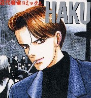
エラヅヨの殺しや（山松ゆうきち）も強さは問題ないし、σ(-_-)が好きなキャラクター。しかし地味なキャラクターなので、今回は遠慮してもらった。
男子があれば女子もある。
女子選手も強くなければ話にならない。しかしオリンピックともなれば、女子選手は強いだけでは資格がない。なんといってもビジュアルと色気が大事。(^-^； その基準で選んだのが下記の４人。
なんと云っても１番手は打天使・冬子（かどたひろし）、２番手は、どんなに負けようと思ってムチャクチャ売っても、どうしても負けることのできない一発の女（桐島いつみ）。
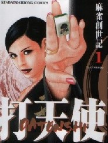 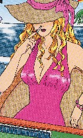
３番手は、相手の考えていることがお見通しの里里里（さとさとり）（山口譲司）。いざとなれば割れ目で勝負。(^-^；
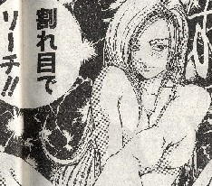
最後は、超ボインなのにその名も恐ろしい六本木死星（ろっぽんぎシスター）・Ｍ（原田重光）。
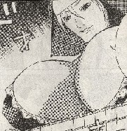
実はオリンピックは男女２種目だけではない。同時に裏オリンピックも開催されている。裏オリともなればがんがんの裏テク勝負。もちろんこの部門だって、一流どころがそろっている。
一番手は、見るモノをアッといわせる天才マジシャン、バード（青山広美）。２番手は、裏テク古典派の代表・坊や哲（星野泰視）。
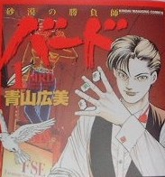 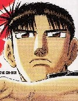
３番手は、裏世界の雄・ショーイチ（神田たけし）。さて真打ちに控えしは、アクの強さでは誰にも負けないダイナマイトダンディ・地獄のワニ蔵（押川雲太郎）。
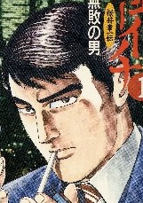 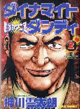
なんと豪華なドリームチーム。これで３部門とも金メダル間違いなし。(^-^；
|